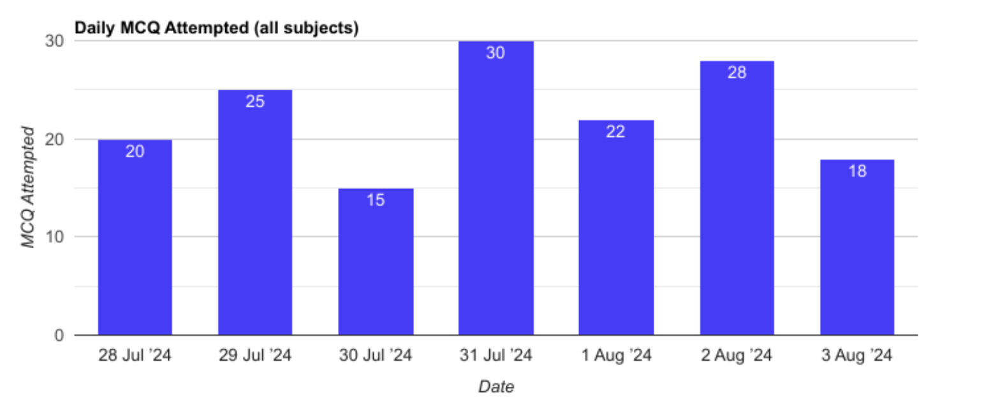
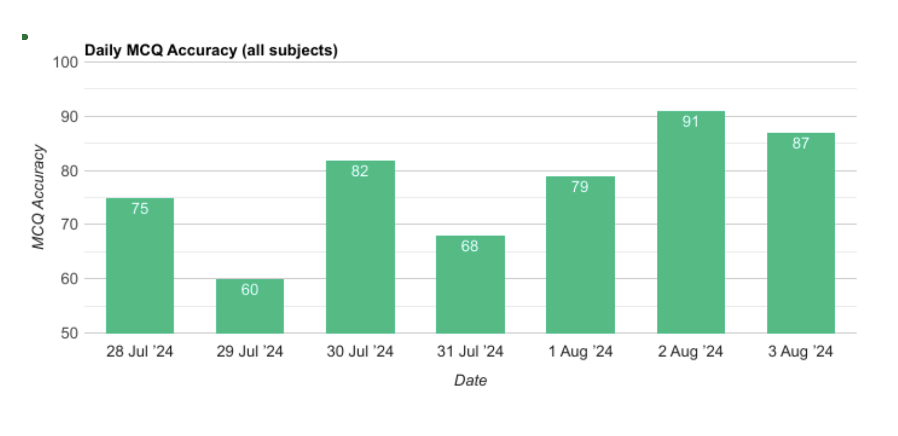

Weekly Progress Report
29 July - 4 Aug 2024
MCQ Marks
83/100
MCQ Accuracy
88%
Mains Marks
74/100
Daily Discipline
 Subject-wise Practice
| Subject | MCQ Marks | MCQ Attempted | MCQ Accuracy | Mains Marks | Mains Qn Attempted |
|---|---|---|---|---|---|
| Geography | 88/100 | 95 | 93% | 80/125 | 8 |
| Environment | 75/100 | 90 | 83% | 72/100 | 9 |
| Polity | - | - | 0% | 84/95 | 10 |
| History | 45/95 | 100 | 50% | - | - |
| Polity | 85/95 | 100 | 75% | - | - |
Tests Attempted
| Test Name | Subjects | Marks | Accuracy |
|---|---|---|---|
| AIPT | Polity, History | 85/100 | 80% |
| AIPT 2 | Science & Technology | 20/100 | 25% |
| AIPT4 | Health Care | 75/100 | 85% |
💡 Pro Tip: Periodically assess your progress and adjust your study plan accordingly. Identify and work on weak areas.